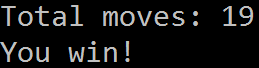
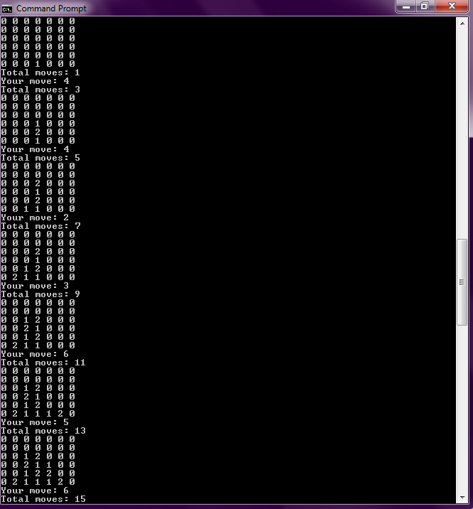
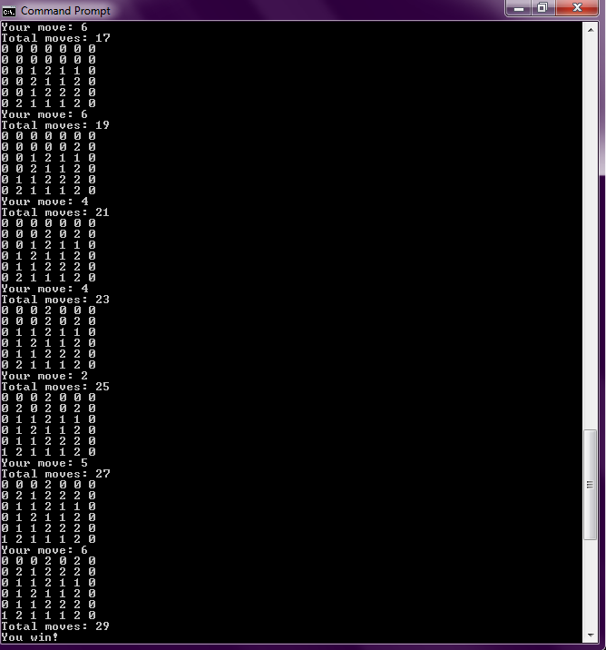

C - CLI 1/2 Player Connect 4 w/ Priority-based AI
This program was compiled using Microsoft Visual Studio 2013/2017 Compiler, using other compilers such as GCC might not work.
MD5 hash: 635FEBBC432552FEC5F663356D1AC732
SHA1 hash: B2CB729DE0B7AF5B030D81BA6A5CE789D7C6DD72
SHA256 hash: F2D0B0E8BE9A1E17364E206EDB5261B40D93BF73E064A88569D009556E05ADF7
The real goal is to beat this AI in under 20 moves (or 9 player moves) and IT IS POSSIBLE!

Usage (in Command Prompt):
cl Connect4.c (To compile)
./Connect4.exe [1 or 2 players (Player v. Comp or Player v. Player)]
Notes:
- The computer will always start first.
- The computer should not lose to an "average" player in less than 20 moves, but it is still possible to win under 20 moves. It checks for winning moves, defensive moves, losing moves, and then priority moves.
- WARNING: Using letters or particular symbols will result in an infinite loop as the scanf function cannot handle them. However, the program will check if the column chosen is out of bounds. Please keep the input between 1-7.
- There is a small bug (sometimes) that crashes the program after the game has ended but results are accurate.
Sample Game vs AI


How the nextMove() is implemented:
The CPU first copies the board to try a lot of different moves starting from the worst move which is to find any open column and drop a token. As we progress down the code, the CPU "changes its mind" and finds better solutions such as which columns it should prioritize. Every time a move is made, it resets the board to the original position of the turn. After priority columns, the CPU checks for defensive moves to prevent the player from winning. And last, it checks if there is a winning move and that has the highest priority.